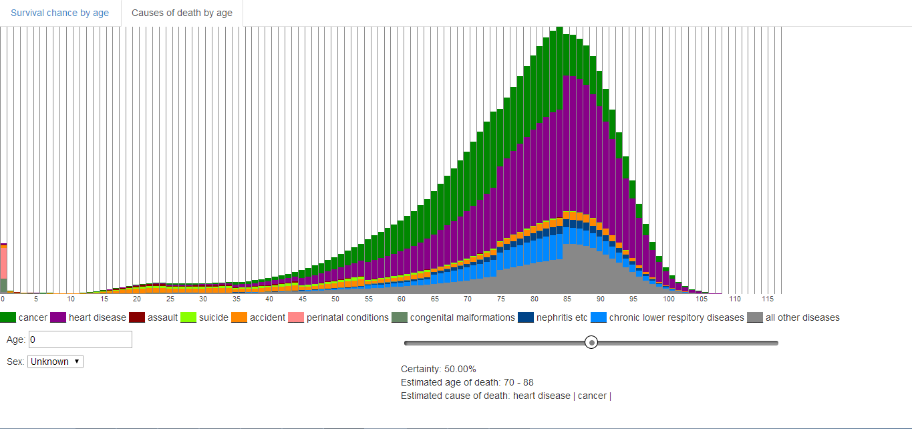

GSCE Preparer
Personal project
I worked with a surgeon to develop a website that would help prepare resident surgeons for the GSCE.
Tech:
- Ruby on Rails
- HTML/CSS/Javascript
- Angular.js
- PostgreSQL
- ActiveAdmin
Features:
- Editable content and users
- In-depth explorations of surgical scenarios

US Servas
Professional project
I worked in a small office developing and maintaing various software features for U.S. Servas from 2011-2014
Tech:
- HTML/CSS/Javascript
- jQuery
- JQuery UI
- PHP
- PostgreSQL
Features:
- Membership management system with medium sized (100k records) database
- Several geographical applications for finding members
Drama Free
Personal project
Website to help with party planning, allows users to anonymously submit which of their friends have personal conflicts with their other friends, so anyone planning a party can search groups for personal conflicts.
Tech:
- HTML/CSS/Javascript
- Facebook Graph API
- jQuery
- JQuery UI
- Server-side Python
- MySQL
Features:
- Autocomplete search string from users facebook friends
- Fairly complex graph algoritihm to effieciently find group conflicts in minimal time.

Longevity Stats
Personal project
Website that allows people to see statistical probabilities of when they will die, along with probabilities of dying from different causes per year.
Tech:
- HTML/CSS/Javascript
- Angular.js
- Server-side Python
Features:
- Reads CSV data gathered from the CDC on death probailities and causes by age and gender.